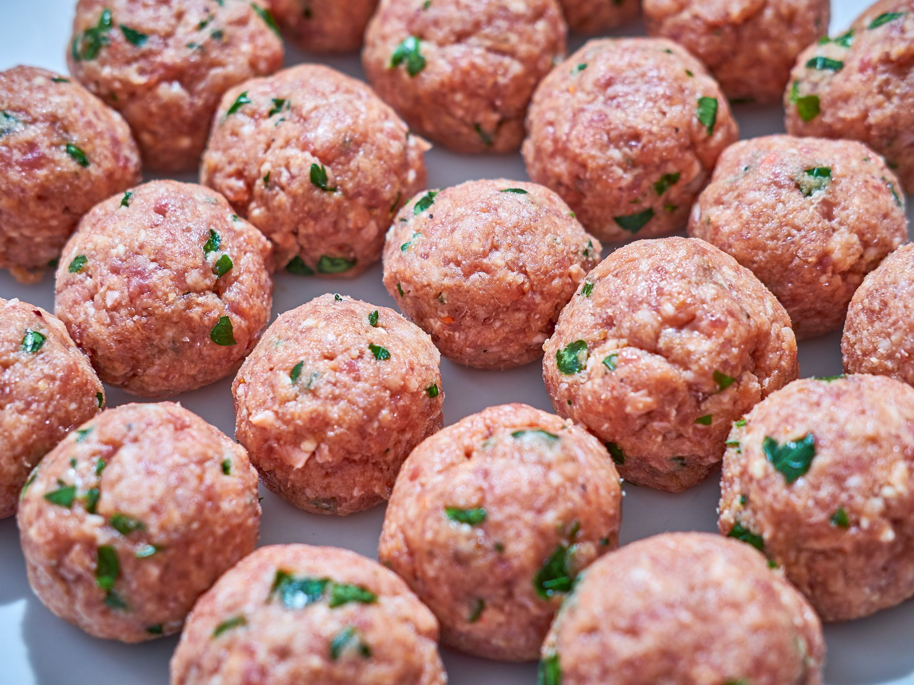

Panade Recipe

Description
A panade is a mixture of bread and milk, combined to form a paste,
that is incorporated into ground meats so that they don't get too hard or dry when you cook them.
Ingredients
- Milk
- Bread crumbs
- Worcestersauce
- Salt
- Pepper
Steps
- Mash bread crumbs into milk until even texture
- Add worcestersauce to the mix
- Salt and pepper to taste